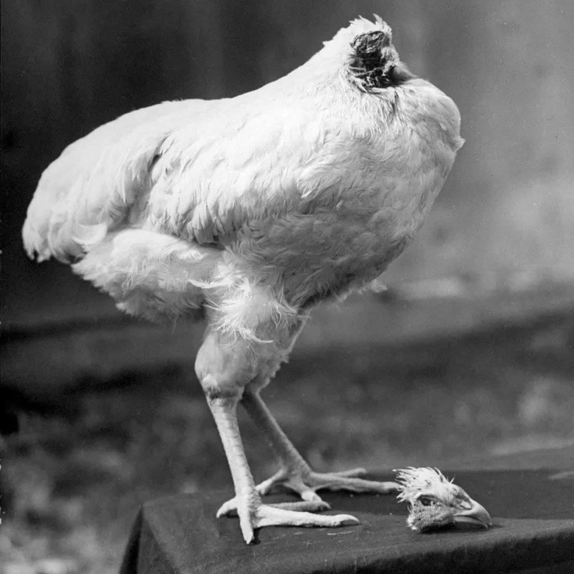
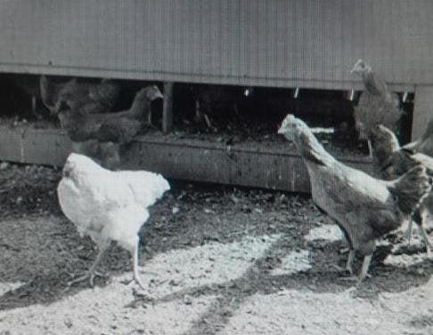
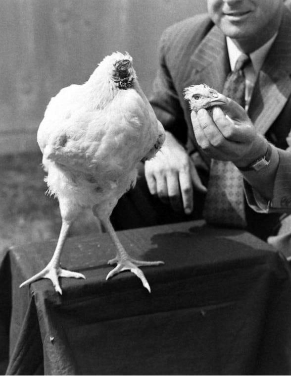
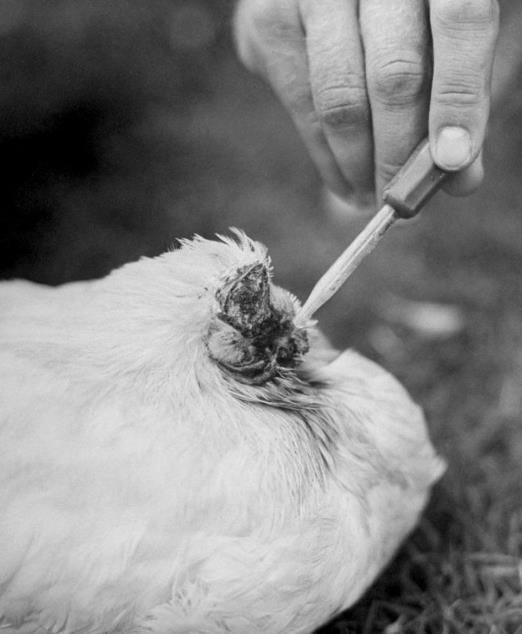
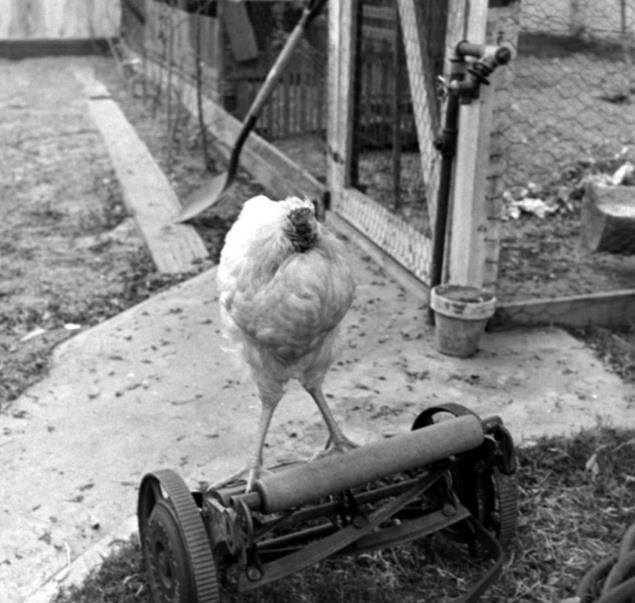
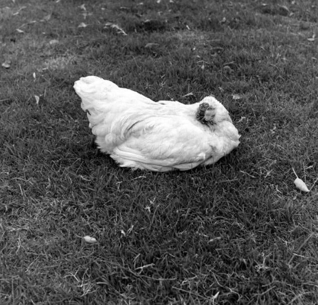

1945 4월 20일
미국 콜로라도주 프루이타에서 양계장을 운영하던 로이드 올슨은
밥상에 올리려고 닭 한마리의 머리를 쳤지만 죽지 않고 돌아다녔다
신체구조상 뇌간이 목에 몰려있어 종종 흔히 있는 일이기에
별 신경 쓰지않고 내버려 두고 잠시 뒤에 다시 왔지만

(저 새끼 뭐야?....)
다른 동족들 사이에서 멀쩡히 돌아다니는 목 없는 닭을 보고 경악을 금치 못한다
닭은 자신의 목이 떨어졌다는 사실도 모르는지
깃털을 정리하려는 시도나 모이를 쪼아보려는 시도까지 하는게 아닌가?
이를 본 올슨은 좀 미안하기도 했는지 닭을 보살피기로 결정한다
닭들 입장에서는 동족 하나가 목 없이 돌아다니니 충격과 공포였을거다


물론 스스로는 머리가 떨어져 나가 살 수 없기에 스포이드를 통해 직접 음식을 주입해줬다
이때까지만 해도 올슨은 얼마 못가 죽을것이라 생각했지만
일주일이 지나고 한달이 지나가도 죽지않자 충격에 빠진다

이 충격적인 비쥬얼에 당연히 소문은 순식간에 퍼졌고
흥행사 호프 웨이드는 닭에게 이름을 붙여주고 전국을 돌아다니며
돈을 버는게 어떠냐는 제안을 한다
올슨은 이것을 승낙하고 "마이크"라는 이름을 붙여준다
정말로 떼돈을 벌었다. 한 달에 4,500 달러를 벌어들였다고 하는데, 1950년 당시 미국의 1인당 GDP가 1,116 달러였으니 정말 엄청난 거액을 벌어들인 셈이다

올슨이 떼돈을 벌었다는 소문을 타자몇몇 농부도 자기가 키우는 닭 머리를 내리쳤지만(......)
살리가 있나? 다 즉사했다
마이크는 1947년 3월까지도 잘 살았지만 죽고만다
올슨이 식도와 기도를 헷갈려 음식을 잘못 주입했기 때문이다
실수만 아니였다면 더 오래 살았겠지만 호흡곤란으로 허무하게 죽고만다
정확히 1년 6개월을 살다 죽었다

저게..가능하구나;;